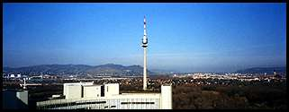
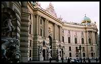
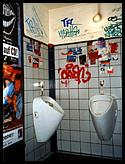

<div class="photos" align="center">

<p>	<a href='picture/photo/austria/vienna_street.jpeg'></a><?php Thumbnail ('vienna_roof', 'bottom', 'big'); ?>
<br/>	<a href='picture/photo/austria/vienna_spike.jpeg'></a><?php Thumbnail ('vienna_cathedral', 'bottom', 'big'); ?>
<br/>	<a href='picture/photo/austria/la_creperie.jpeg'></a><?php Thumbnail ('vienna_skyline', 'bottom', 'big'); ?>
<br/>	<a href='picture/photo/austria/vienna_michaelerplatz.jpeg'></a><?php Thumbnail ('vienna_heldenplatz', 'bottom', 'big'); ?>
<br/>	<a href='picture/photo/austria/vienna_window.jpeg'></a><?php Thumbnail ('vienna_rathaus', 'bottom', 'big'); ?>
	</p>
</div>

<p class="caption">
	<a href="out_in_vienna.html">Vienna</a> has it's 'normal' traditional side, and it's modern weird side...</p>

<div class="photos" align="center">
<p>	<a href='picture/photo/austria/das_mobel_bar.jpeg'></a><?php Thumbnail ('das_mobel_bookcase', 'bottom', 'big'); ?>
<br/>	<a href='picture/photo/austria/das_mobel_door.jpeg'></a>
<br/>	<a href='picture/photo/austria/vienna_kiddie_houses.jpeg'></a>
<br/>	<a href='picture/photo/austria/vienna_aera_toilet.jpeg'></a>
	</p>
</div>
